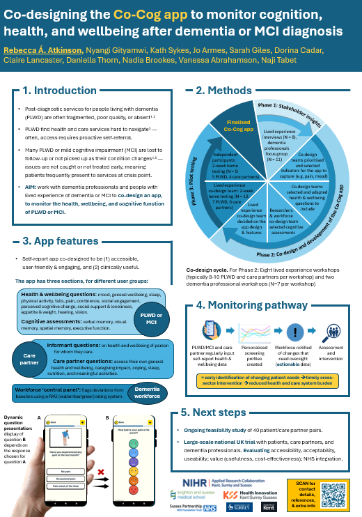

The Co-Cog Study (Alzheimer’s Europe 2025)
Click the poster to download a PDF copy:

References
- Smith R, Martin A, Wright T, Hulbert S, Hatzidimitriadou E. Integrated dementia care: a qualitative evidence synthesis of the experiences of people living with dementia, informal carers and healthcare professionals. Arch Gerontol Geriatr. 2021;97:104471.
- National Audit Office. Improving dementia services in England – an interim report. London: National Audit Office; 2010. https://www.nao.org.uk/wp-content/uploads/2010/01/091082.pdf
- Francis, N., & Hanna, P. (2022). Informal carer experiences of UK dementia services—A systematic review. Journal of Psychiatric and Mental Health Nursing, 29(1), 116-129.
- Boyd, N. D., Naasan, G., Harrison, K. L., Garrett, S. B., D'Aguiar Rosa, T., Pérez‐Cerpa, B., ... & Ritchie, C. S. (2022). Characteristics of people with dementia lost to follow‐up from a dementia care center. International journal of geriatric psychiatry, 37(1).
- Dunne, R. A., Aarsland, D., O’Brien, J. T., Ballard, C., Banerjee, S., Fox, N. C., ... & Burns, A. (2021). Mild cognitive impairment: the Manchester consensus. Age and ageing, 50(1), 72-80.